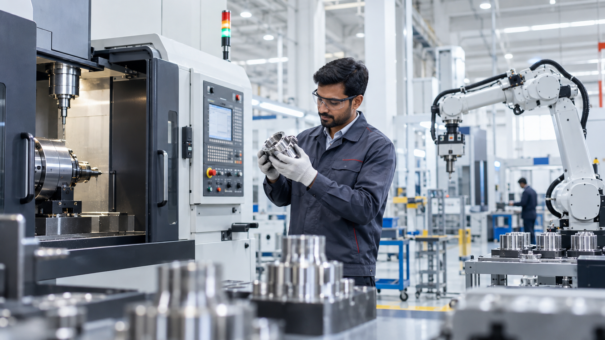
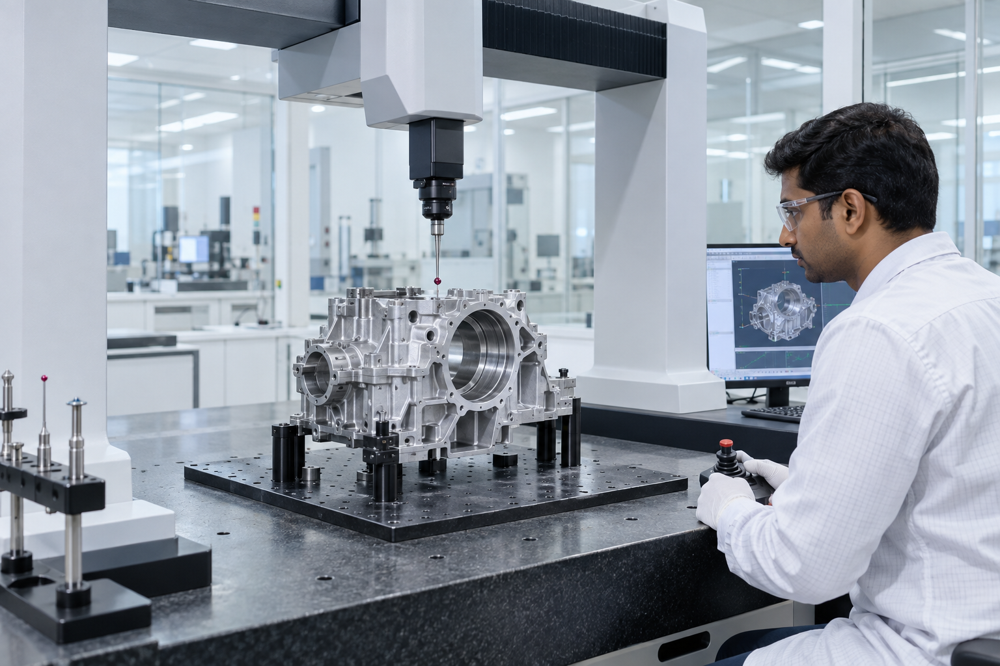

Design and simulate
3D modelling, forging and casting simulation, gear analysis, CAD/CAM and FEA.
DRIVELINE / TECHNOLOGY & MANUFACTURING
A connected path from engineering to production and validation.
Six connected stages make the production journey easy to understand. Product types are listed separately on the Products & Solutions page.
3D modelling, forging and casting simulation, gear analysis, CAD/CAM and FEA.
In-house die design and manufacturing, die sinking, VMC, CNC lathe, EDM and wire-cut.
Hot, warm and cold forging, billet preparation, temperature-controlled presses and reduce rolling.
CNC turning, turn-mill, VMC, honing, grinding, broaching, spline rolling and gear hobbing.
GCN+O, mesh belt furnaces, normalising, induction hardening, sealed quench and surface coating.
CMM, gear, form, roughness, material, torque and endurance testing.
Hot and warm presses range from 600T to 2500T; cold forging presses range from 100T to 1000T. The presentation also lists 800+ CNC turning and turn-mill machines, 90+ VMCs, 40+ broaching machines, 25+ honing machines and 20 CNC grinding machines.
See the products →
Metrology and metallurgy infrastructure supports dimensional, material and functional validation against drawing requirements.
